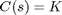
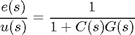
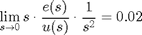
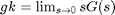
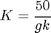
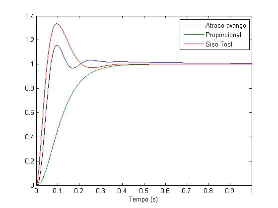
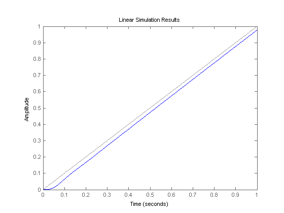

Contents
ES868 – Pré Relatório Lab 5
Controle de plantas eletrˆonicas utilizando um controlador atraso-avanço digital
Turma A - 06/04/2015
- Augusto Miranda Garcia - 104627
- Guilherme de Oliveira Souza – 117093
- Vinícius Ragazi David - 120258
load ../G.mat load ../pids.mat s = tf('s');
Determinação do K
Fazendo

e buscando por um erro em regime permanente a uma entrada rampa de 2%:

With

:
kg = evalfr(minreal(s*G), 0) K = 50/kg t = 0:0.001:2; referencia = ones(length(t)); referencia = referencia(1,:);
kg =
8.9931
K =
5.5598
Margem de fase
[~, Mf] = margin(K*G)
Mf = 26.1470
Margem de fase desejada
Md = 45; phi = Md-Mf alpha_v = (1+sin(degtorad(phi)))/(1-sin(degtorad(phi)))
phi =
18.8530
alpha_v =
1.9548
Frequência de cruzamento
amplitude = sqrt(alpha_v); [~, ~, ~, Wg] = margin(K*G/amplitude)
Wg = 28.1219
Parâmetros restantes
tau_v = 1/(Wg*sqrt(alpha_v)) alpha_t = 1/alpha_v tau_t = 10*alpha_v*tau_v/alpha_t
tau_v =
0.0254
alpha_t =
0.5116
tau_t =
0.9719
Controlador
C_v = (alpha_v*tau_v*s+1)/(tau_v*s+1); C_t = (alpha_t*tau_t*s+1)/(tau_t*s+1); C = K*C_v*C_t
C = 0.1374 s^2 + 3.041 s + 5.56 --------------------------- 0.02472 s^2 + 0.9973 s + 1 Continuous-time transfer function.
Comparação de desempenho
Y1 = lsim(feedback(C*G, 1), referencia, t); Y2 = lsim(feedback(Ck*G, 1), referencia, t); Y3 = lsim(feedback(Csiso*G, 1), referencia, t); plot(t, [Y1 Y2 Y3]) xlim([0, 1]); legend('Atraso-avanço', 'Proporcional', 'Siso Tool'); xlabel('Tempo (s)');

Desempenho
stepinfo(feedback(C*G, 1))
ans =
RiseTime: 0.0423
SettlingTime: 0.4088
SettlingMin: 0.9087
SettlingMax: 1.1581
Overshoot: 15.8098
Undershoot: 0
Peak: 1.1581
PeakTime: 0.0961
Erro à rampa
rampa = lsim(1/s, referencia, t); lsim(feedback(C*G, 1), rampa, t); axis([0, 1, 0, 1])
